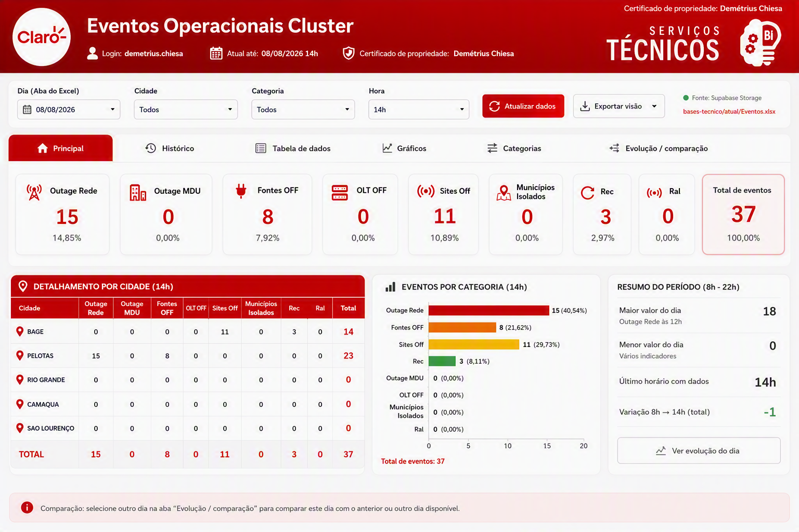

← Voltar para o portal
▣ Abrir em janela
Claro•
RANKING AT1 PERSONAS
ATUAL ATÉ
--/--
TODOS
Certificado de propriedade: Demétrius Chiesa
AT1 Personas
Base Personas Principal
PRODUTO
CIDADE ADICIONAL
CLUSTER ADICIONAL
MÊS
ANO
Exportar 4 gráficos
Carregando a base do Supabase...
RANKING AT1 CIDADE
Maior resultado à esquerda
RANKING AT1 CLUSTER
Maior resultado à esquerda
HISTÓRICO MENSAL CIDADES
2026 em vermelho • 2025 em cinza
HISTÓRICO MENSAL CLUSTERS
2026 em vermelho • 2025 em cinza
Fonte: atual/at1_personas.xlsx • Supabase Storage